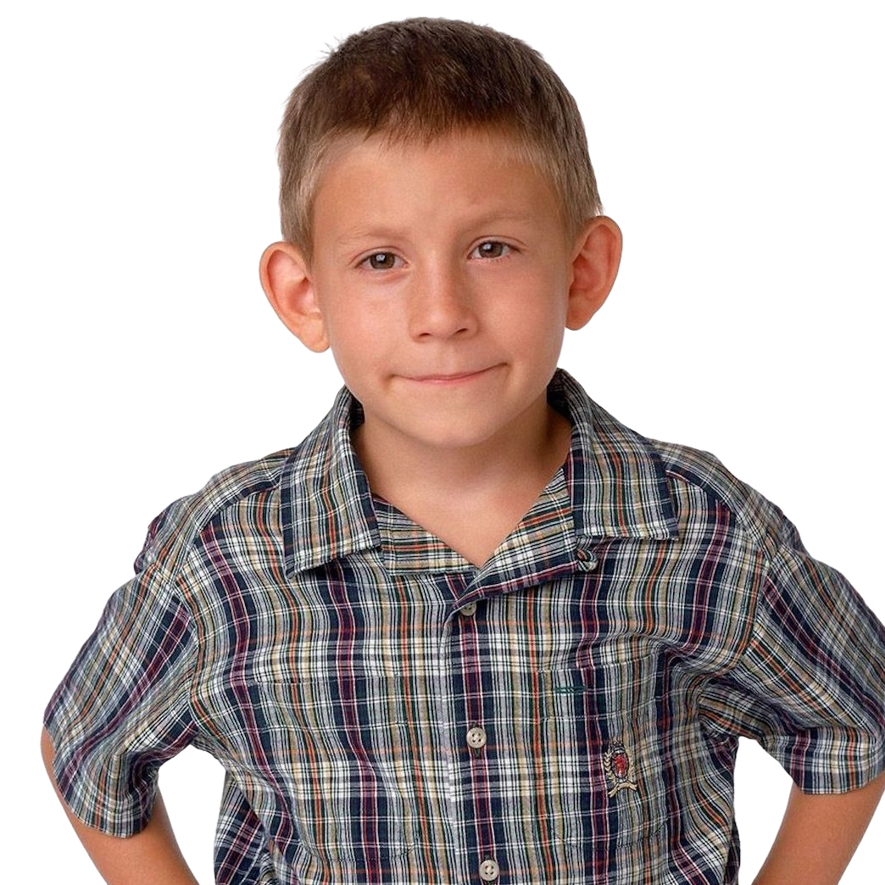

Malcolm
El genio de la familia, Malcolm es un estudiante superdotado que se
enfrenta a los desafíos de ser el hijo del medio. A pesar de su
inteligencia, a menudo se ve envuelto en situaciones cómicas.
Leer más
Reese
El hermano mayor, Reese, es conocido por su falta de inteligencia
académica, pero compensa con su astucia en situaciones de la vida
diaria. Es un experto en meterse en problemas.
Leer más

Dewey
Dewey es el músico talentoso y creativo. A pesar de su ternura, a
veces utiliza su agudeza para salirse con la suya.
Leer más

Hal
El padre, Hal, es un hombre cariñoso y cómico. Aunque puede ser un
poco torpe, su amor por su familia y sus momentos divertidos hacen
que todos lo adoren.
Leer más
Loiss
La madre, Lois, es la matriarca fuerte e intensa de la familia. Su
energía y determinación mantienen a la familia en marcha, aunque a
veces con un toque de caos.
Leer más

Francis
El hermano mayor de Malcolm, Francis, se distancia de la familia al
unirse a una academia militar. Aunque inicialmente parece rebelde,
su tiempo en la academia le enseña valiosas lecciones de vida.
Leer más

Jamie
El benjamín más joven de la familia, Jamie, es el adorable bebé que
trae alegría a todos. Su ternura contrasta con el caos que a menudo
ocurre en la vida de la familia, y todos encuentran consuelo en su
inocencia.
Leer más